No. 04 · Shrimp & prawn
Sea Catch White Shrimp
Penaeus indicus
Often called Banana Shrimp or Chaka. White shrimp has a sweet, mild flavour, low to medium oiliness, and moist flesh with a medium texture. The flesh is translucent when raw, and white with pinkish bands when cooked.
- Sea catch & farm raised
- Raw & cooked
- Block, semi-IQF & IQF
- Sizes 8/12 – 41/50

No. 04 Specification
Sea Catch White Shrimp
Sizes are counts per pound: 16/20 means 16 to 20 shrimp to the pound.
- Scientific name
- Penaeus indicus
- Origin
- Bangladesh
- Source
- Sea catch / farm raised
- Peak season
- April to October
- Process type
- Raw & cooked
- Freezing type
- Block frozen, semi-IQF & IQF
- Product line
- Headless Shell On (HLSO)
- Head On Shell On (HOSO)
- Easy Peel (Regular Cut)
- Peeled & Deveined (Tail On / Tail Off)
- Cooked PDTO / P&D
- PDTO Skewer
- P&D Skewer
- PUD (Peeled and Undeveined)
- Available sizes
- 8/12
- 13/15
- 16/20
- 21/25
- 26/30
- 21/30
- 31/40
- 41/50
- Packing style
- 6 × 4 lb, 6 × 2 kg, 6 × 1.8 kg, 6 × 1.5 kg, 6 × 1.2 kg, 10 × 1 kg, 5 × 2 lb, 10 × 2 lb
- Requirement
- All products are produced following HACCP-based GMP, SOP and SSOP. All production workers maintain personal hygiene and sanitation at all times.
- Uniformity
- 1.25 is the standard uniformity for all sizes. It means the 10% largest vs. the 10% smallest shrimps per unit.
- Appearance
- All shrimp have uniform natural colour and size, and are in good condition within a unit. No black spots, pin spots or off-flavours are allowed.
Note: We may produce and supply any specified size, variant, pack variety or value addition, for either buyers’ brands and/or packers’ brands, as per buyers’ requirements.
12 Product range
Categories of Sea Catch White Shrimp
Select a photograph to enlarge it. Use the arrow keys to move between photographs.
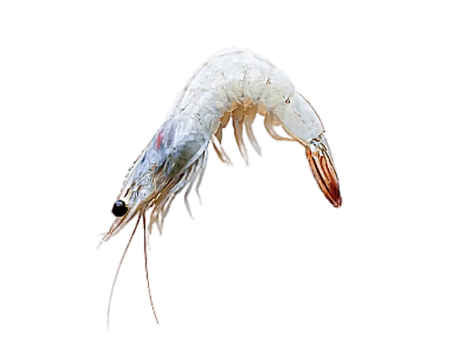
01White Head On Raw Shrimp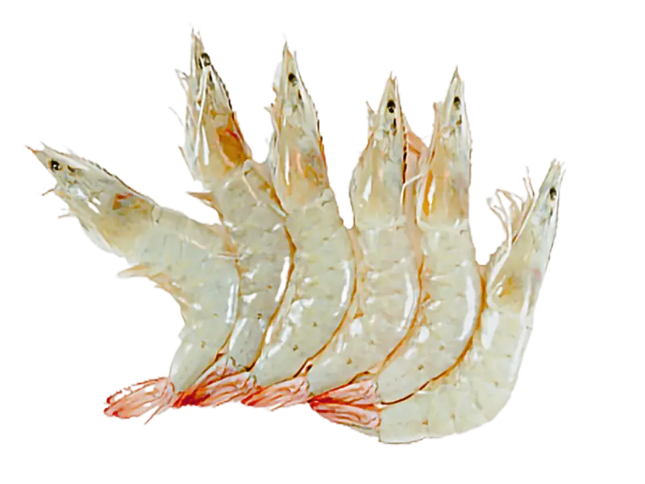
02White Head On Raw IQF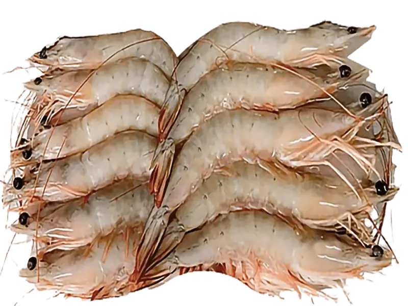
03White Head On Raw Semi IQF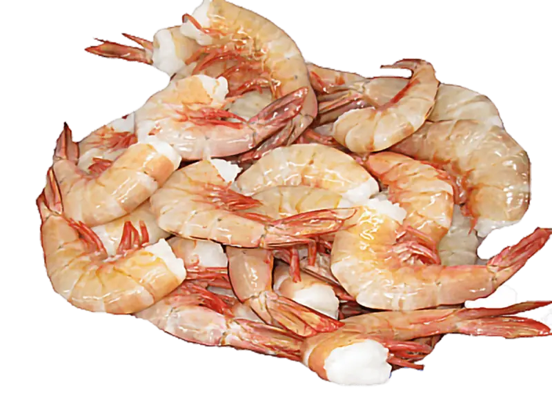
04White Headless Shell On Raw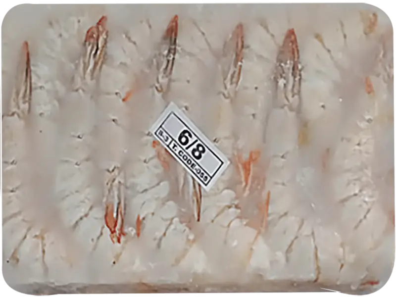
05White Headless Shell On Raw Block Frozen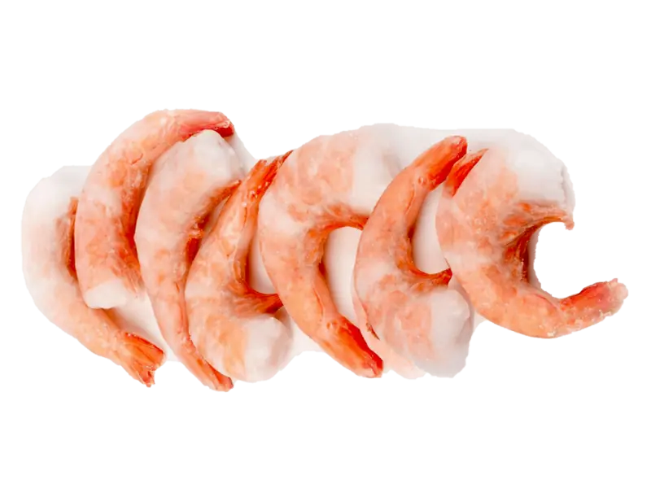
06White Headless Shell On Cooked IQF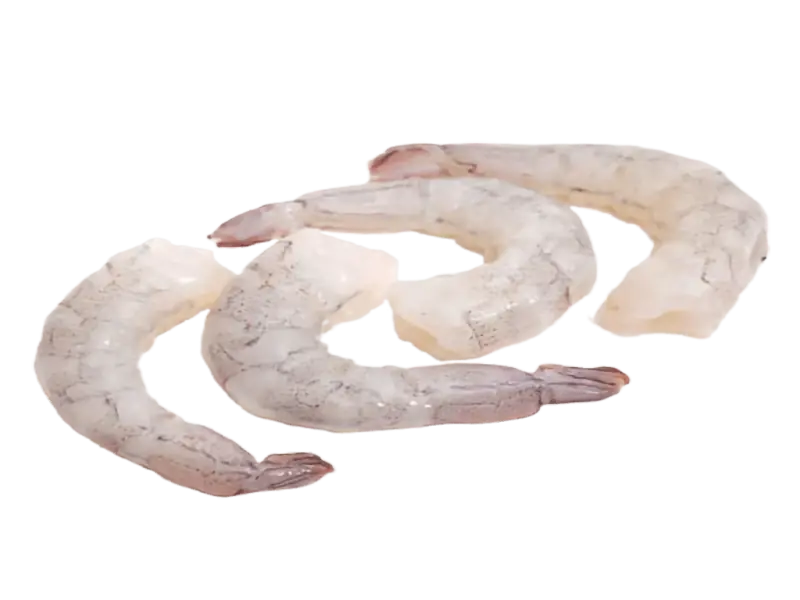
07White Head On Raw P&D IQF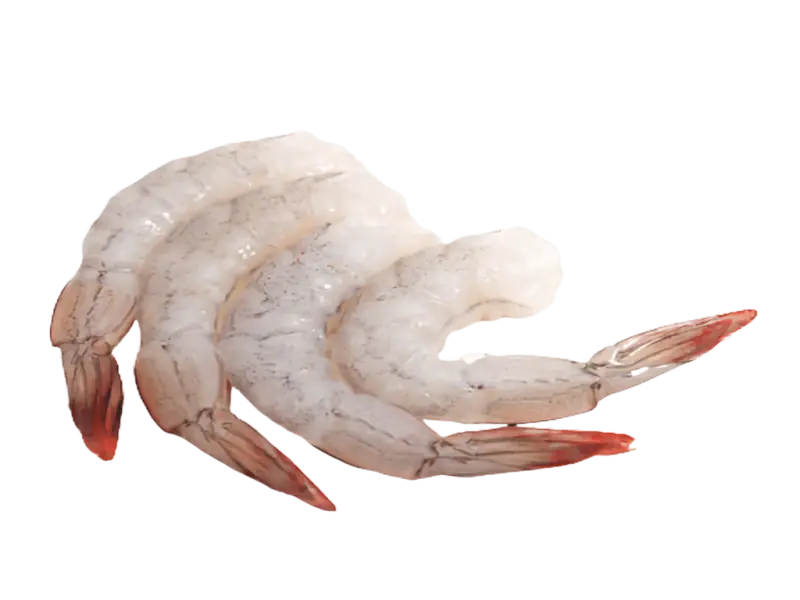
08White Head On Raw P&D Tail On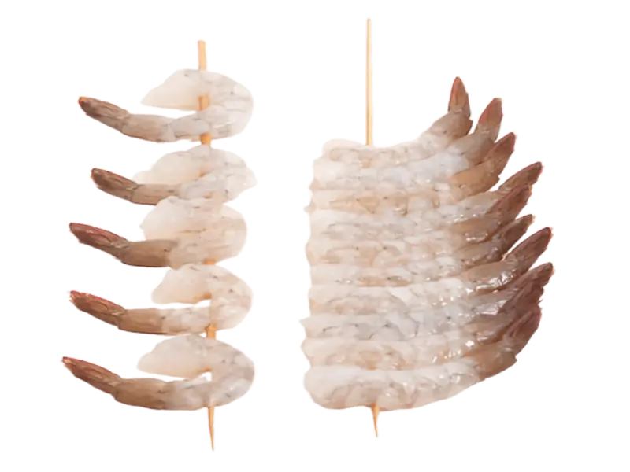
09White Head On Raw P&D Tail On Skewer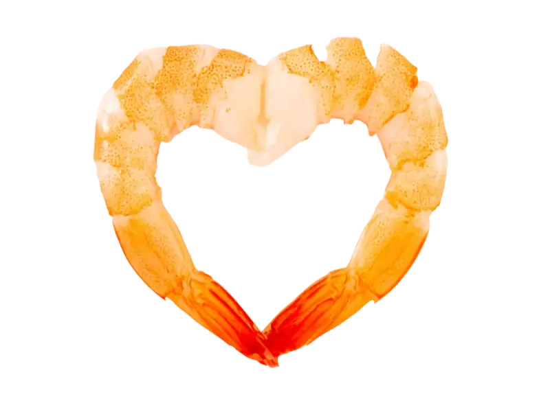
10White Head On Raw P&D Tail On Cooked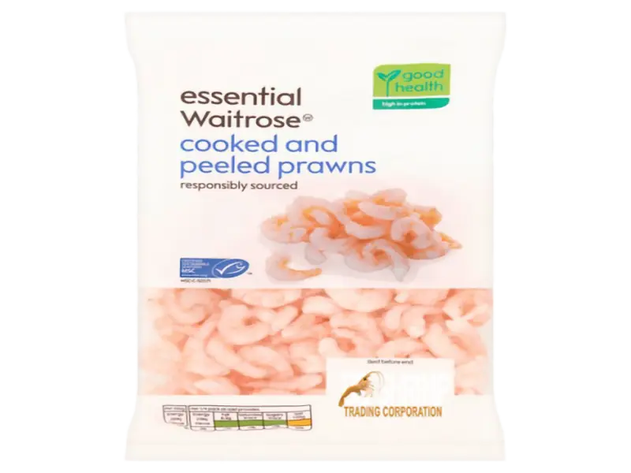
11White Head On Raw P&D Tail Off IQF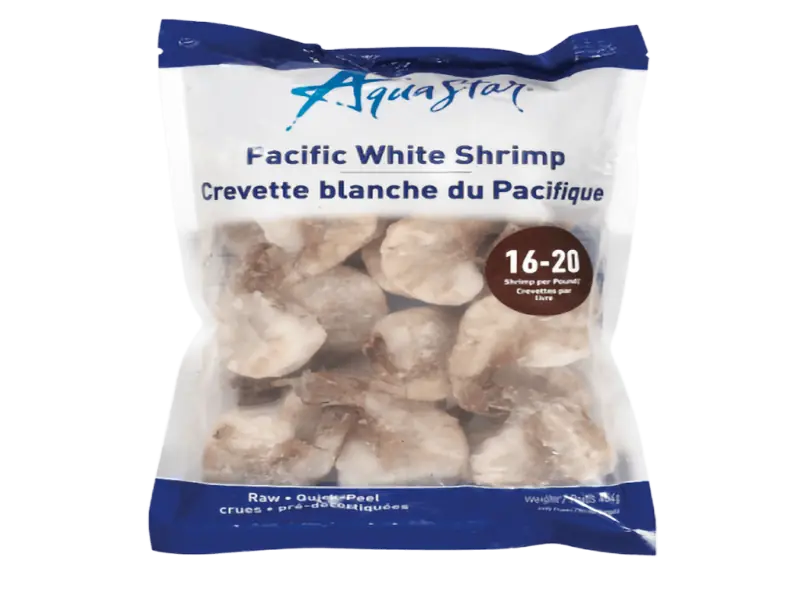
12White Headless IQF


→Enquiry